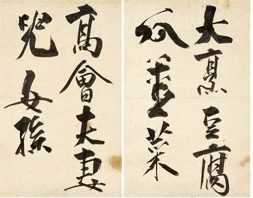

 Chinese calligraphy was introduced to Korea as early as the 2nd or 3rd century CE, and became popular in the 7th century. In the 8th century, Kim Saeng became known as the earliest Korean calligraphic master, producing work that was compared with that of master Chinese calligrapher Wang Xizhi. In the 9th century, poet Choe Chiwon became known for his calligraphy both in his home country Silla and in the Tang Dynasty.
The angular calligraphy styles of the early Tang masters, Yu Shinan, Ouyang Xun, and Yan Zhenqing, persisted in popularity until the 14th century, when the more rounded style of Zhao Mengfu came into vogue. Korean calligraphy became increasingly formalistic in the years that followed. Gim Jeong-hui (김정희, 金正喜, (1786-1856), also known as Kim Jeong-hui, is considered the greatest calligrapher in the Joseon dynasty, and he was also a scholar-official, painter, epigrapher, and practicing Buddhist. He was a master of many calligraphic forms but is most famous for Chusache, the bold, freeform style he perfected while in exile on Jeju Island.He is known as the chusa style after his pen name 秋史, inspired by the ancient Chinese lishu script.
As the scholarly classes used Chinese characters, Korean calligraphy used hanja until the 1910-1945 Japanese occupation of Korea. Nationalist sentiment led to the popularization of the native hangul alphabet, and calligraphic works using hangul have since seen a revival, although hanja calligraphy is still popular today. The Korean calligraphy is developing its own style, steadfastly. Fonts that are not square are being developed, considering jong-sung, or sound coming after the vowel.